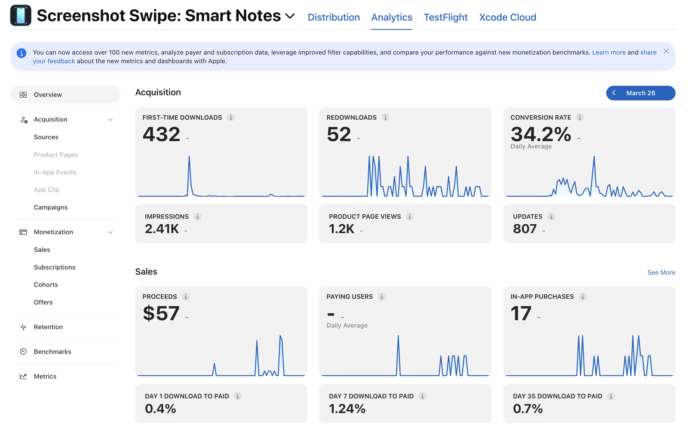
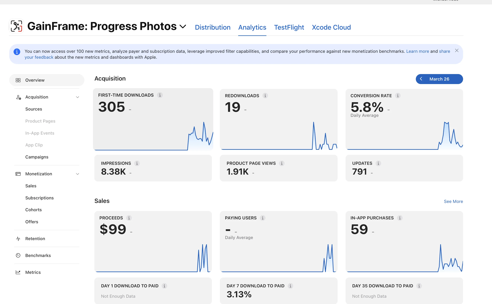
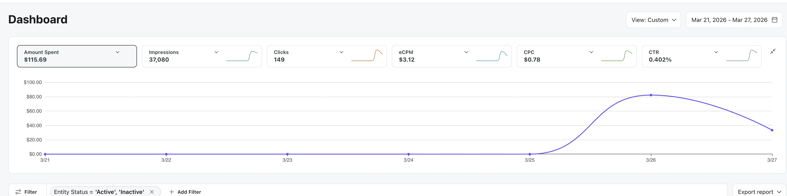
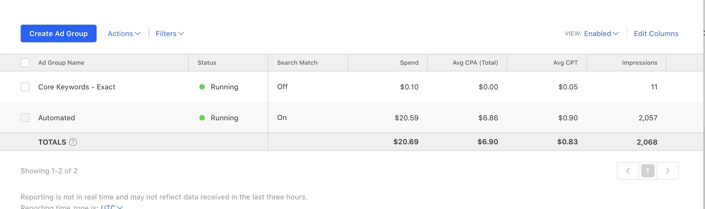
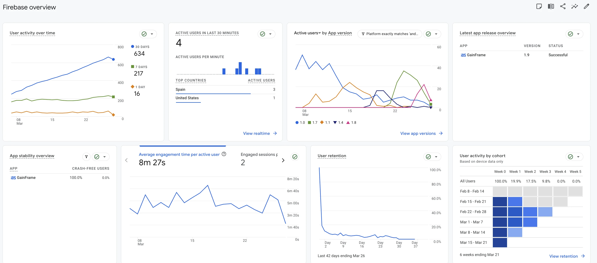

My First App Flopped. Here's How I Launched My Second One in 2 Months.
Real numbers on beta testing, marketing channels, retention, and what I learned building GainFrame as a new dad with a full-time job.
My first iOS app does not show up on the App Store anymore. Even if you type the full name and scroll through every result, it is gone. I built Screenshot Swipe, did zero marketing, assumed users would find their way to it, and watched nothing happen. Six months later I launched my second app GainFrame with a completely different approach. It has been live for 20 days. Twenty days post-launch, I am still figuring out most of it.
Why I Built GainFrame
I have been going to the gym on and off for years. Over time I accumulated hundreds of progress photos scattered across my camera roll. Every time I wanted to compare my current physique to a month ago or a year ago, I ran into the same frustration. Finding the right photos took forever. I had no context for older photos. No weight, no workout info, no notes.
Beyond the organization problem, I struggled to see changes in my own body. The mirror and the scale tell you something but they miss a lot. I wanted a more objective way to track whether I was making progress.
GainFrame started as a simple concept: an easy way to put two progress photos side by side. From there the idea expanded. The app now lets users compare photos with full context attached. Weight, workout details, goals. AI-powered analysis reports break down specific muscle group changes between photos. Daily and weekly check-ins track trends over time and show whether those trends align with user goals.
The Failed First App
GainFrame is my second iOS app. My first app, Screenshot Swipe, taught me every lesson the hard way.
With Screenshot Swipe I made every first-time developer mistake. I assumed the App Store alone would drive downloads. I assumed because I understood the app, everyone else would too. I did zero marketing. The app was solving a problem specific to me. Features were decent but none were intuitive to a new user.
A small group from a platform called AppRaven found Screenshot Swipe and seemed to like the app. The app has 432 total downloads and $57 in lifetime proceeds. Today Screenshot Swipe does not show up on the App Store even when searching the full name.

Screenshot Swipe failed for clear reasons. No marketing. No user validation. No focus on making the experience simple. I carried those lessons into GainFrame.
Building GainFrame Differently
When I started building GainFrame I set a few rules based on what went wrong with Screenshot Swipe.
First, the app had to be dead simple to use. Anyone should be able to install, go through onboarding, and see the value within five minutes. Turns out building clean intuitive interfaces is hard. GainFrame is a step up from Screenshot Swipe in ease of use but there is still work to do.
Second, I was going to get real user feedback before launch. No more building in a vacuum and hoping people show up.
Third, I was going to start marketing from day one. Not after launch.
I built the core app in about one month and moved to TestFlight.
Finding Beta Users on Reddit
Getting early users was my first real test. I had been taking my own progress photos with GainFrame and posted some of them in niche fitness subreddits. The screenshots included the app name. On several posts, other users would organically ask what app I was using. I dropped a link to my landing page explaining I was looking for TestFlight testers.
The numbers:
- ~150 people signed up for the mailing list
- ~100 downloaded the TestFlight build
- ~30 gave feedback to varying degrees
- 5–10 became dedicated power users
Those 5–10 power users shaped the app. I was in direct communication with them for weeks. The feedback was not one dramatic pivot. There were dozens of small changes. Tweaks to the UI. Adjustments to the onboarding flow. Shifts in feature prioritization. Together those changes made GainFrame significantly more usable and focused.
This was one of the most valuable things I did in the entire process.
Launch and the Silence After
I launched GainFrame on the App Store after about a month of TestFlight iteration. Here is where things stand after 20 days:
- 305 first-time downloads
- 8,380 impressions
- 1,910 product page views
- 5.8% conversion rate
- $99 in total proceeds from 59 in-app purchases
- 3.13% day 7 download-to-paid rate

You would expect more feedback to roll in with more users. The opposite happened. Feedback dried up almost completely.
During the beta I had a direct line to engaged testers who were invested in helping improve the app. After launch, users download, try the app, and either stick around or leave. Most do not reach out. Getting back to a steady flow of user feedback is one of my top priorities right now.
The Marketing Struggle
Marketing is brutal right now. The indie dev channels are flooded with solo founders all trying to promote their apps to each other. Certain spaces on Twitter feel like an echo chamber where nobody is buying and everyone is selling.
Spending all your time building something you believe in, launching, and then watching nothing happen is a gut punch. Users do not show up on their own no matter how good the product is.
Here is a channel-by-channel breakdown with real numbers.
Reddit (Organic)
I tried to repeat the success of my earlier TestFlight posts. Results were mixed. A few posts did well but as soon as someone asks about the app in the comments and I reply with a link, the comment gets downvoted. Reddit was good for getting my first 200 users. Scaling past 200 through organic posts feels unrealistic.
Reddit (Ads)
I started running Reddit ads recently. Here are the numbers so far:
- $115.69 spent
- 37,080 impressions
- 149 clicks
- $0.78 CPC
- 0.40% CTR
I plan to put $500 into Reddit ads plus the $500 promotional credit. I need better analytics in place to track which ads are driving installs.

Apple Search Ads
I have two ad groups running. One is automated and one is manual matching on exact keywords. My daily budget is $150 but I was not seeing any clicks for the first few weeks. I kept bumping the Target CPA higher. Even with an aggressive bid, Apple Ads has only spent $20.69 over four weeks across 2,068 impressions. The automated group is doing all the work at a $6.86 average CPA. The exact keyword match group has spent $0.10. For a niche app like mine, Apple Search Ads feels like it is not finding enough relevant inventory to spend against.

Google Ads
I set up Google Ads a month ago. Zero impressions. Zero clicks. Something is clearly broken with my campaign setup. According to Google the campaign is active and should be running. I need to dig into this.
TikTok (Organic)
I had never used TikTok before. Creating an account and posting felt like wandering into a different universe. I forced myself to put myself out there and started posting a few times a week. Fitness content and app content. After about 20 posts: 58 followers, 229 likes. A few posts hit a couple thousand views. Since TikTok does not let you add links until you reach 1,000 followers, organic TikTok has limited direct conversion value at this stage.
The best thing to come from TikTok has been users DMing me to ask about the app or give feature feedback. You can see what I have been posting at @gainframe5 on TikTok.
TikTok (Ads)
I spent $200 promoting a post to drive traffic. Tons of views but zero conversions. A complete waste of money.
Blog and SEO
I built out a blog and have been writing posts targeting keywords related to my app for the past two months. Traffic from search is starting to trickle in. The numbers are small but trending in the right direction. Someone messaged me saying they were chatting with Claude and Claude recommended my blog as a good example of how to build an SEO-driven blog for an iOS app. Made me feel like I was doing something right.
The Retention Problem
This is the biggest challenge and the one I think about most.
GainFrame is not a workout tracker you open every session. GainFrame focuses on progress photos and premium features like analysis reports and precision body fat estimation. The natural behavior for a new user is: sign up for the free trial, upload some photos, get body fat estimates and feedback, get the information they wanted, and cancel.
Other apps in this space handle this differently. Some charge a one-time fee for body composition scans. Some lock you out for 7 days between scans so you are forced to wait past the trial period.
I did not want to do either of those things. As a user I find those approaches frustrating. And they work against the core value of GainFrame.
The way I see GainFrame is not as a one-time body fat guessing tool. I want GainFrame to be the app you use throughout your entire fitness transformation. The real value shows up after a few weeks of consistent check-ins. With enough data points, the app starts identifying trends you would never spot with a mirror or a scale. The analysis reports are specific to each user and their goals. We track how identified weak areas improve over time.
The challenge is making the daily or weekly check-in experience valuable enough on day one so users keep coming back during those first few weeks before the trend data kicks in. I am still working on this.
The Firebase data tells the story. User retention drops off a cliff. Week 1 retention sits around 20%. By week 2 it is at 17.5%. Week 3 drops to 9.8%. Week 4 and 5 hit 0%. Average engagement time per active user is 8 minutes and 27 seconds, which tells me the users who do stick around are engaged. The problem is keeping them past that first week.

What I Have Learned So Far
Analytics should be a priority from day one. I set up Google Analytics and Firebase crash reporting at launch. But I quickly realized I needed more visibility into feature usage, ad performance, and user behavior. I recently added PostHog and the data is already helping me understand what users engage with and what they ignore.
Feature creep is a constant temptation. I keep falling into the trap of building new features instead of refining existing ones or validating ideas with users first. When feedback slows down, building feels productive. But building without validation is how you end up with a bloated app nobody asked for.
Watch people use your app in person. I have been asking friends, family, and people at the gym to go through the app while I watch. The things you assume are obvious but see multiple people struggle with are humbling. This has been one of my most effective feedback methods.
Building as a New Dad with a Full-Time Job
My daughter is 4 months old. I work a full-time job. Finding time to build, market, and improve GainFrame is a constant balancing act. I try to do at least a little every morning. Some mornings I work on marketing. Some mornings I fix a bug or improve onboarding. Some mornings I do research.
I am not going to pretend I have this figured out. The time constraint is real and affects every decision about what to prioritize.
What Comes Next
My focus for the next few weeks: retention, onboarding, and analytics.
I need to make the daily check-in experience sticky before the long-term trend data kicks in. I need to keep improving onboarding based on watching real people use the app. And I need full visibility into how paid channels are performing so I know where my limited marketing budget goes.
You are welcome to check GainFrame's live revenue stats here: TrustMRR — GainFrame
If you are building something and dealing with any of the same challenges, I would like to hear from you. And if you are into fitness and want to try GainFrame, you can download it here.